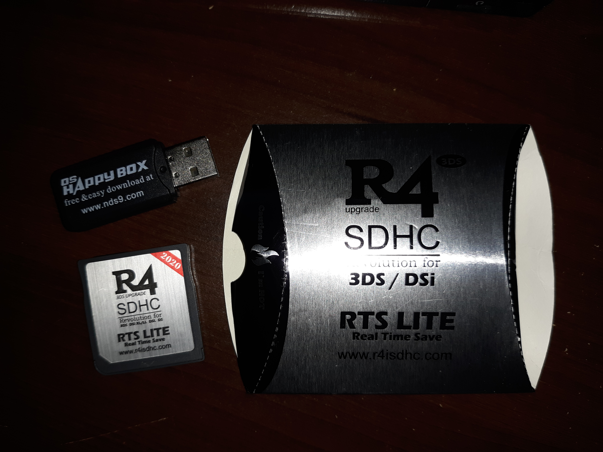
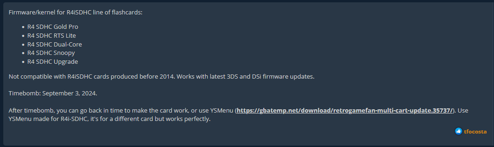
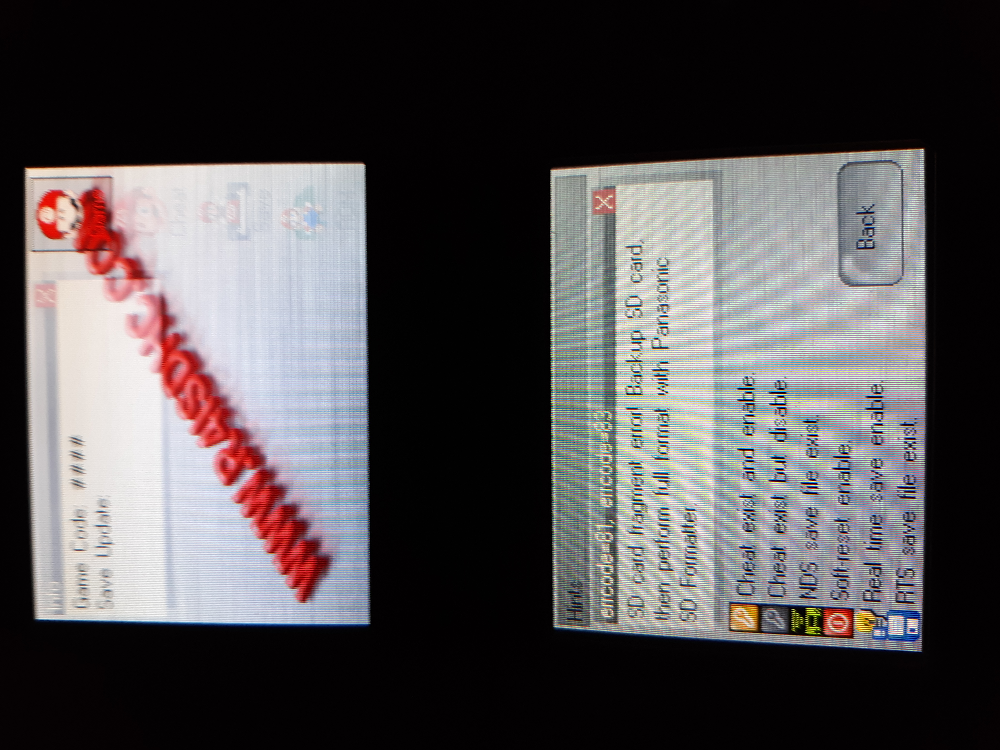
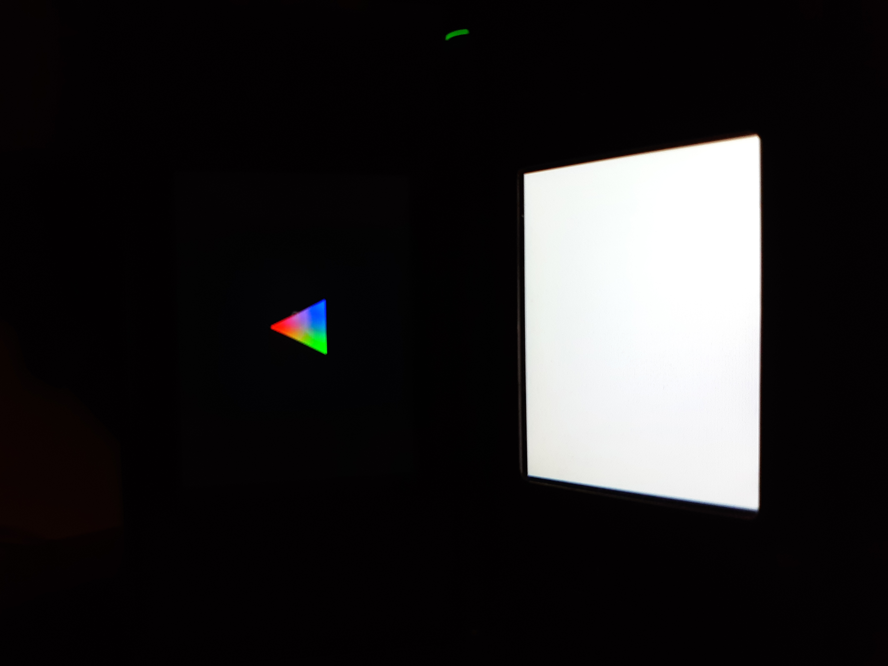

R4SDHC
I got a Nintendo DS lite at a thrift store recently! Never had one growing up but I remember kids on the bus either playing multiplayer Mario Kart or using Pictochat. Anyways, now I have another device to try and program for :)
R4SDHC is a device that lets you put NDS games and media on a micro SD card and load them without needing any hardware modifications to the device. There seem to be a lot of different versions and clones online. I ended up going with the RTS LITE from here: https://www.ebay.com/itm/165808325394?hash=item269af24312:g:6g0AAOSwr4NhHhBR.
I also had trouble finding where to download the required firmware and files to put on the SD card. I ended up going with: https://gbatemp.net/download/kernel-v4-0b-for-r4-sdhc-gold-pro-rts-lite-dual-core-snoopy-upgrade-r4isdhc-com.37072/.
The page notes that this firmware will stop working if the time is past Sep. 3, 2024 I think, but you should be able to set the system time before that.
When you boot up the DS, it shows up as a bomberman game:

Then when you load the "game", it boots into this screen:

At first I had an error related to formatting the SD card:
I downloaded and reformatted the card using Panasonic SD formatter from here: https://gbatemp.net/download/panasonic-sd-formatter-windows.32483/. Under options I changed "format size adjustment" to "on".
After re-formatting and copying the firmware files back on the card, my test helloworld program showed up like expected and booted into it successfully:
